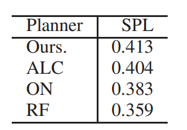

In simultaneous localization and mapping, active loop closing (ALC) is an active vision problem that aims to visually guide a robot to maximize the chances of re- visiting previously visited points, thereby resetting the drift errors accumulated in the incrementally built map during travel. However, current mainstream navigation strategies that leverage such incomplete maps as workspace prior knowledge often fail in modern long-term autonomy long-distance travel scenarios where map accumulation errors become significant. To address these limitations of map-based navigation, this paper is the first to explore mapless navigation in the embodied AI field, in particular, to utilize object-goal navigation (commonly abbreviated as ON, ObjNav, or OGN) techniques that efficiently explore target objects without using such a prior map. Specif- ically, in this work, we start from an off-the-shelf mapless ON planner, extend it to utilize a prior map, and further show that the performance in long-distance ALC (LD-ALC) can be maximized by minimizing “ALC loss” and “ON loss”. This study highlights a simple and effective approach, called ALC- ON (ALCON), to accelerate the progress of challenging long- distance ALC technology by leveraging the growing frontier- guided, data-driven, and LLM-guided ON technologies.
Fig. 1. Long-distance ALC (LD-ALC) problem. The ellipse represents the error ellipse, and the numbers next to the curve are sample travel distances. In contrast to the short-distance travel ALC scenario (blue line), the long-distance travel ALC scenario (red line) significantly impacts the map cumulative error reset caused by loop closing and presents a higher level of difficulty (LoD). This makes it both a practical and challenging problem, which is the focus of our interest.
Fig. 2. System overview. The ALC planner is formulated as an active SLAM system’s waypoint planner module, which is responsible for planning waypoints (subgoals). (a) Role of the existing waypoint planner in the Active SLAM system. (b) Structure of the proposed extended waypoint planner. The map-less ON planner block, marked with a red box and white text, has been introduced.
Fig. 3. ALC taxonomy. The robot’s viewpoint path is depicted as a black line with an arrow, and the area observed from each viewpoint without being occluded is illustrated as a circle. (a) Familiar place scenario (line with blue arrow): This represents an ALC scenario where familiar places are mainly traveled, and a closed-form solution exists. (b) Unfamiliar place scenario (line with red arrow): This represents an ALC scenario where unfamiliar places are mainly traveled, and it is highly non-trivial. (c) “Hard” or “maze” scenario (line with green arrow): This represents a difficult ALC scenario in which the robot enters a maze-like domain, which requires a great deal of cost, and the map is contaminated by accumulated errors, and there is a high risk of ultimately failing to revisit PVPs.
Fig. 4. Augmented ON workspace. We generate the workspace for the ALC experiment by extending the standard workspace used in the object goal navigation (ON) literature. Instead of exhaustively generating a large virtual workspace that covers all viewpoints on a long-distance trajectory, we efficiently generate a workspace that covers only viewpoints near revisited points of interest in the ALC task. We then simulate this augmented ON workspace using Habitat-Sim, a standard ON simulator. The meaning of the error ellipse and travel distance sample values follow Figure 1.
Fig. 5. Experimental Setup. Top: Bird’s-eye view of the workspace. Bottom left: 100 target images. Bottom right: Illustration of the exploration and mapping process. (Red curves: robot trajectories, Blue dots: subgoal candidates).
Table1：PERFORMACNE RESULTS.
